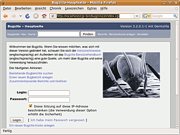

Bugzilla
Archivierte Anleitung
Dieser Artikel wurde archiviert, da er - oder Teile daraus - nur noch unter einer älteren Ubuntu-Version nutzbar ist. Diese Anleitung wird vom Wiki-Team weder auf Richtigkeit überprüft noch anderweitig gepflegt. Zusätzlich wurde der Artikel für weitere Änderungen gesperrt.
Hinweis:
für Precise nicht mehr in den Quellen
Zum Verständnis dieses Artikels sind folgende Seiten hilfreich:
Bugzilla  ist eine Webapplikation zum Verwalten und Verfolgen von Fehlern (Bugs) und Ideen in Softwareanwendungen. Von den Entwicklern hinter Firefox, Thunderbird und Co. entwickelt, wird Bugzilla von vielen großen und kleinen Software-Projekten als Bugtracker für ihr Projekt verwendet. So verwenden z.B. GNOME oder auch KDE Bugzilla. Das Programm benötigt zum Betrieb einen Webserver wie auch eine MySQL-Datenbank. Alternativ kann Bugzilla seine Daten auch in einer PostgreSQL-Datenbank speichern, dies wird hier im Artikel jedoch nicht beschrieben.
ist eine Webapplikation zum Verwalten und Verfolgen von Fehlern (Bugs) und Ideen in Softwareanwendungen. Von den Entwicklern hinter Firefox, Thunderbird und Co. entwickelt, wird Bugzilla von vielen großen und kleinen Software-Projekten als Bugtracker für ihr Projekt verwendet. So verwenden z.B. GNOME oder auch KDE Bugzilla. Das Programm benötigt zum Betrieb einen Webserver wie auch eine MySQL-Datenbank. Alternativ kann Bugzilla seine Daten auch in einer PostgreSQL-Datenbank speichern, dies wird hier im Artikel jedoch nicht beschrieben.
Installation¶

Dieser Artikel beinhaltet die Installation von Bugzilla aus den Paketquellen von Ubuntu. Dies bedeutet, dass die Installation vollständig automatisch ablaufen kann und somit sehr einfach ist. Allerdings werden in die Quellen freigegebener Ubuntu-Versionen keine neuen Programmversionen aufgenommen, sondern nur wichtige Sicherheitsupdates eingespielt. D.h. die Bugzilla-Version aus den Quellen ist meist älter als die Version von Bugzilla, die man von der Homepage des Projektes herunterladen und von Hand installieren kann.
Paket installieren¶
Bugzilla ist eine Web-Applikation, die einen Webserver und eine MySQL-Datenbank benötigt. Man sollte sich daher dringend in die Thematik "Webserver" einarbeiten und sich Grundlagen aneignen. Im Wiki finden sich entsprechende Artikel unter diesen Links.
Sämtliche Dienste müssen nicht zwangsweise vor der Installation Bugzillas installiert werden, sie werden als Abhängigkeit automatisch bei der Installation des Paketes mit installiert. Bugzilla kann somit direkt aus den Paketquellen von Ubuntu heraus installiert werden. Dazu muss nur das Paket
bugzilla3 (universe)
 mit apturl
mit apturl
Paketliste zum Kopieren:
sudo apt-get install bugzilla3
sudo aptitude install bugzilla3
installiert sein [1]. Bei der Installation des Paketes werden eine Reihe von Informationen abgefragt. So wird nach den Daten des Bugzilla-Administrators gefragt, hier kann man die Daten nach Bedarf eintragen. Des weiteren kann die benötigte Datenbank automatisch erzeugt werden. Dabei wird das root-Passwort des MySQL-Servers benötigt. Bitte dieses Passwort nicht mit dem root-PW eines Linux-Systems verwechseln. Das Passwort für die mysql-Datenbank Bugzillas kann leer gelassen werden, so wird automatisch ein sicheres, zufälliges Passwort erzeugt.
Soll für den Emailversand von Bugzilla ein Account auf einem smtp-Server verwendet werden, so muss zusätzlich noch das Paket
libauthen-sasl-perl
mit apturl
Paketliste zum Kopieren:
sudo apt-get install libauthen-sasl-perl
sudo aptitude install libauthen-sasl-perl
installiert werden [1]. Dieses Paket wird nicht automatisch installiert.
Apache einrichten¶
Nach der Installation muss für Bugzilla in Apache noch ein virtueller Host angelegt werden. Die dafür benötigte Konfigurationsdatei steckt schon im Paket und muss nur in das passende Verzeichnis kopiert werden. Danach wird der virtuelle Host aktiviert und die Konfiguration des Webservers neu eingelesen. Dazu öffnet man ein Terminal [2] und führt folgende Befehle aus.
sudo cp /usr/share/doc/bugzilla3/examples/basic.conf /etc/apache2/sites-available/bugzilla sudo a2ensite bugzilla sudo /etc/init.d/apache2 reload
Benutzung¶
Nun kann man Bugzilla das erste Mal aufrufen. Der Link dazu lautet
Auf dieser Seite muss man sich einloggen. Die Zugangsdaten hat man bei der Installation von Bugzilla selber angegeben.
"Login:" Die für den Administrator eingetragene Email-Adresse
"Passwort:" Das für den Administrator gesetzte Passwort
Nach dem Einloggen müssen noch eine Reihe wichtiger Einstellungen vorgenommen werden, der Dialog dazu wird automatisch eingeblendet. Ist dies geschehen, so kommt man über einen Klick auf "Hauptseite" in der linken oberen Ecke auf die Homepage des eigenen Bugzillas.
Nach einer Neuinstallation erscheinen alle deutschen Umlaute falsch, weil der Systemparameter utf8 "Aus" ist. Dieser sollte man unter Administration -> Pflichteinstellungen auf "An" gestellt werden und anschließend checksetup.pl aufgerufen werden.
sudo /usr/share/bugzilla3/lib/checksetup.pl
- Erstellt mit Inyoka
-
 2004 – 2017 ubuntuusers.de • Einige Rechte vorbehalten
2004 – 2017 ubuntuusers.de • Einige Rechte vorbehalten
Lizenz • Kontakt • Datenschutz • Impressum • Serverstatus -
Serverhousing gespendet von